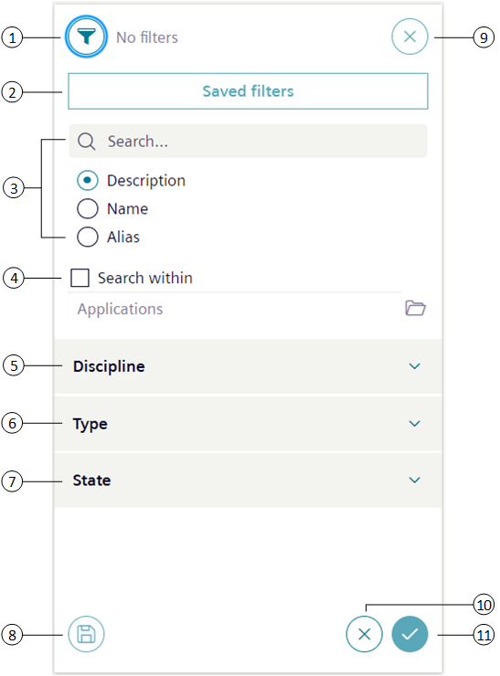

System Browser
This section provides background information for System Browser. For procedures or workflows, see the step-by-step section.
Views
System Browser displays objects in the building management system through various views that you can select from a drop-down list. Views provide different ways to look at the same system. In the Flex Client, the standard views are Management View and Application View. The currently selected view is saved from session to session. If there is no previously saved session, the system defaults to the first view from an alphabetized list of views.
You can single-select to see an object and its children, if any, in greater detail. You can also multi-select objects to display details and see their similarities.
Sending Objects to a Specific Pane
You can send single- or multiple-object selections from System Browser to the Primary or Secondary pane.
Using standard object selection in System Browser always sends the object to the Primary pane. Using the contextual menu that opens when you select the vertical ellipsis to the right of an object allows you to send the selection to either the Primary pane or the Secondary pane. When multiple objects are selected, you can select the vertical ellipsis for any one of the objects, then use the contextual menu to specify a pane, and the entire group will be sent to that pane.
This feature is useful, for instance, if you want to open a second object in the Secondary pane while the first object selected is still open in the Primary pane.
Filtering
Using filters helps you minimize the number of items returned during a search, which in turn makes it easier to find objects in a large system.
You access the filtering features by selecting the Filter icon. The filter area consists of drop-downs (for preset filters, discipline, type, and state), a search field, name scopes (description, name, alias), and a search-within section. The search-within feature limits the search within the current selection in System Browser.
Recent filters: The Flex Client automatically retains the five most recent filters for the current session. Filters are automatically named to reflect your filter criteria. Recent filters are listed in the Preset filters dropdown list, where they can be selected or deleted. When the logged in user’s session ends, all recent filters are cleared.
Saved filters: You can also save filter criteria permanently. After selecting the desired filter criteria, you can save it using the Save filter dialog box, available by clicking the Save icon. The saved filter must have a unique name per user. Once saved, the filter is available across sessions of the Flex Client until the user deletes it. There are no limits to the number of saved filters. Saved filters are listed in the Preset filters drop-down list, where they can be selected or deleted.
Saved filters have the following limitations:
- Flex Client saved filters are not visible on an installed client.
- Saved filters cannot be shared with other Flex Client users.
Copying
System Browser supports copying a single object name, description, alias, or designation.
- Selecting next to an object displays a contextual menu with the Copy command. Selecting Copy displays selectable attributes.
- Selecting and object and then, in Properties, selecting displays a pop up with attributes that can be copied.
Wildcards
Two wildcards are supported in System Browser— the asterisk (*), and the question mark (?).
* (Asterisk): Will match any number of characters to your search. Example: “a*” matches and displays, “a”, “ab”, “abc” and “abcd”.
? (Question mark): Will match one character to your search. Example: “ab?” matches and displays “abc” but does not display “a”, “ab” and “abcd”.
Distributed System
The system allows you to combine multiple projects hosted from one or more projects to form a federated (distributed) system. Global users have the ability to log into, view, and work with any system in the distribution. A single system has a server with a single project. In a distributed system, a collection of projects communicates over a network.
Filter Workspace
The following illustration and table describe the System Browser filter workspace.

System Browser Workspace | ||
| Name | Description |
1 | Filter button | Displays filter options |
2 | Saved filters | Displays Recent and Saved filters |
3 | Search box and search scopes | Allows entering a wildcarded text string and a selection of search scopes |
4 | Search within | Limits the search within the current selection in System Browser |
5 | Discipline | Allows filtering by discipline |
6 | Type | Allows filtering by type |
7 | State | Allows filtering by state |
8 | Save | Opens the Save filter dialog box |
9 | Clear | Clears the filters |
10 | Cancel | Cancels search |
11 | OK | Executes search |